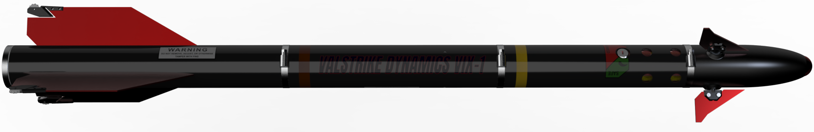
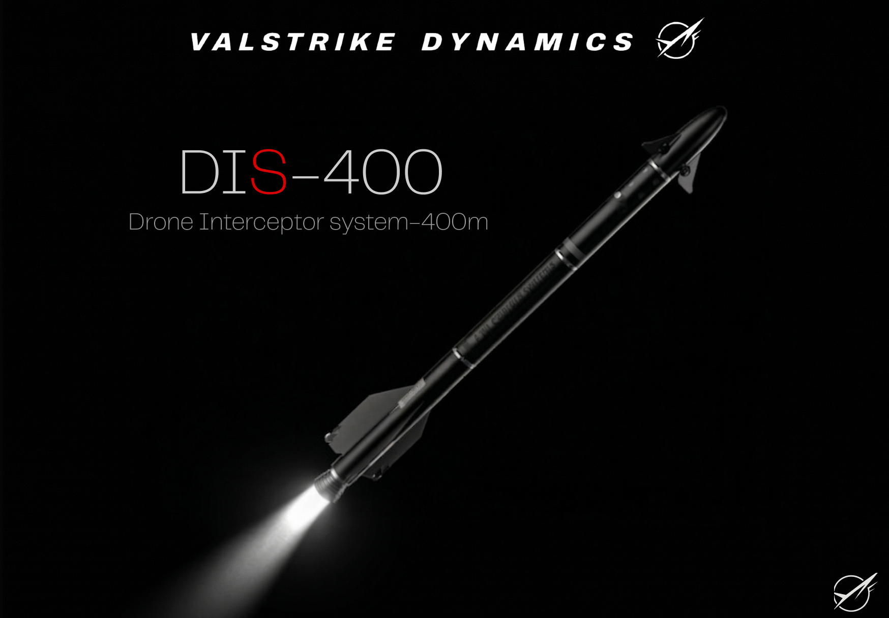

The DIS-400 is Valstrike's flagship surface-to-air missile system, designed for rapid deployment and high-precision interception of aerial threats. Engineered with cutting-edge guidance technology and advanced propulsion systems, the DIS-400 delivers unmatched performance in modern defense scenarios.
Effective engagement range up to 400 km, with multi-stage propulsion for optimal trajectory and interception capabilities across diverse operational environments.
Dual-mode seeker technology combining active radar homing with infrared guidance, ensuring reliable target acquisition and lock-on in all weather conditions.
Mach 4+ terminal velocity with advanced thrust vectoring control, enabling rapid response and high-maneuverability interception of fast-moving targets.
Integrated radar and sensor fusion for early warning and multi-target engagement capabilities.
Seamless integration with C4ISR systems for coordinated defense and real-time battle management.
Configurable warhead options and adaptable launch platforms for mission-specific requirements.
Proven reliability in extreme conditions with comprehensive testing and quality assurance.
The DIS-400 system is designed for rapid deployment and integration into existing defense networks. Our mobile launch platforms ensure flexibility in positioning, while the system's compatibility with NATO standards facilitates international cooperation and joint operations.
